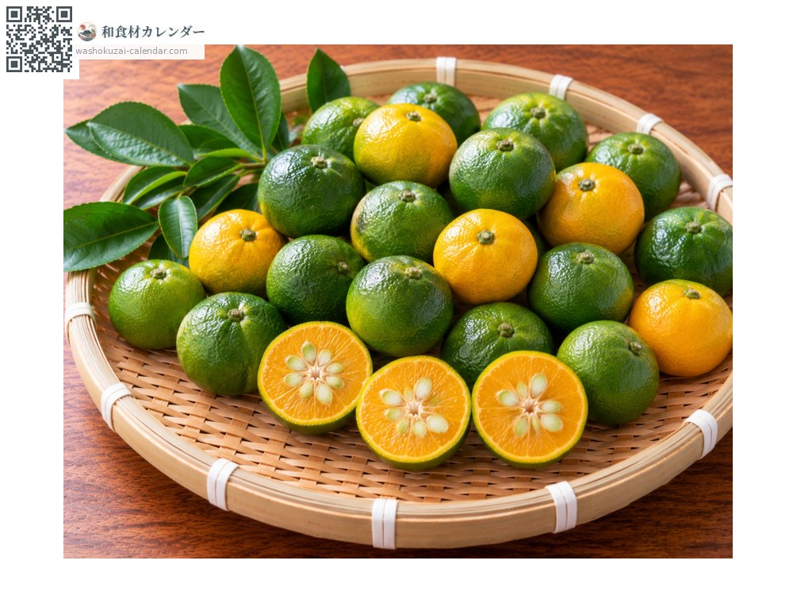
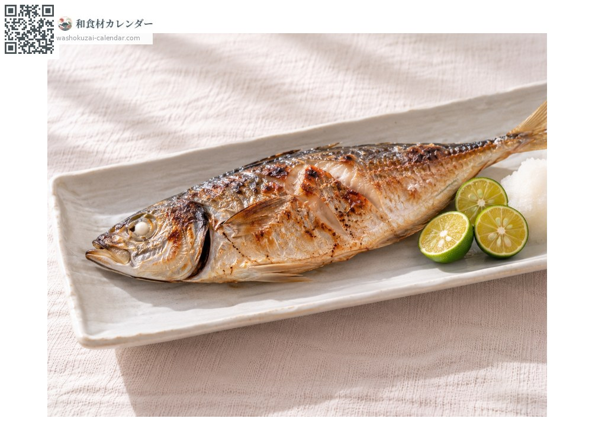
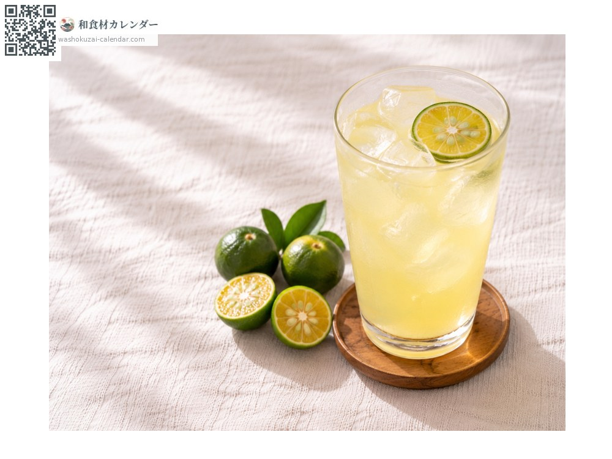
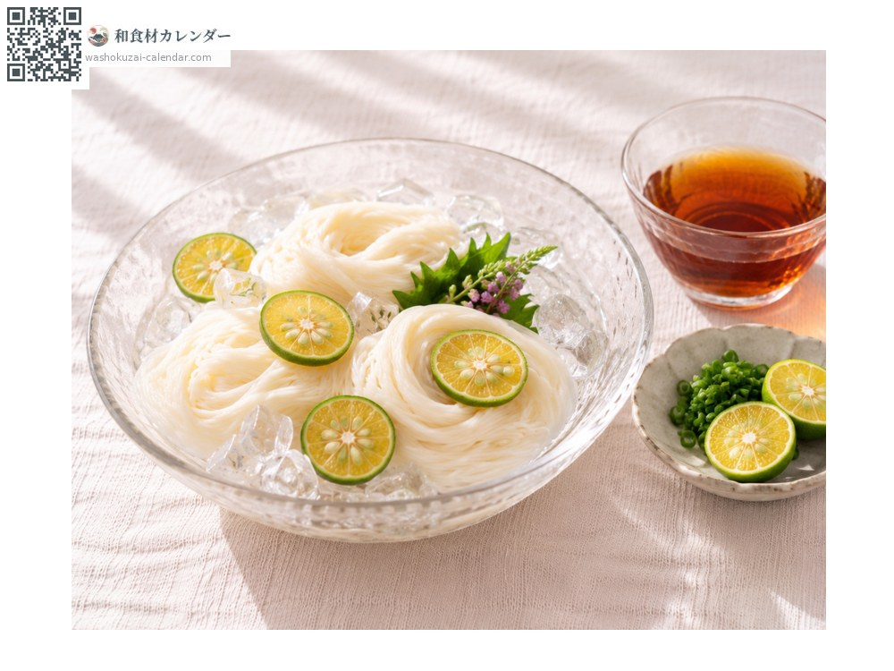
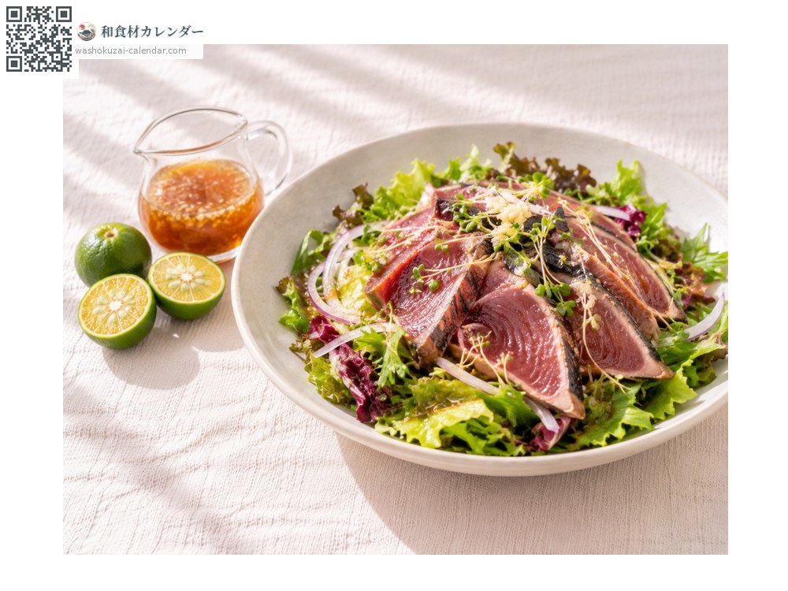

ผลไม้
ส้มชีกุวาสะ
シークヮーサー しーくわーさー shikuwasa
ชื่ออื่นshikuwasa, shiikuwaasaa, shiikuaasaa, hiramiremon
อร่อยที่สุดในเดือน ส.ค., ก.ย., ต.ค.

ช่วงที่อร่อยที่สุด
ม.ค.
ก.พ.
มี.ค.
เม.ย.
พ.ค.
มิ.ย.
ก.ค.
ส.ค.
ก.ย.
ต.ค.
พ.ย.
ธ.ค.
ช่วงอร่อยที่สุดมีจำหน่าย
วิธีปรุง

บีบบนปลาย่าง
ผ่าครึ่งผลสีเขียวแล้วบีบบนปลาย่างหรือซาชิมิ

น้ำผลไม้
ผสมน้ำคั้นกับน้ำเปล่าหรือโซดา

โซเมนเย็น
บีบลงในน้ำจิ้มให้กลิ่นหอม

น้ำสลัด
ผสมน้ำคั้นกับโชยุ ราดปลาโอย่างหรือผักสด
วิธีเลือก
ผลเขียวควรมีเปลือกสีเขียวเข้ม เงางาม ตึง ผลสุกจะเป็นสีเหลืองถึงส้ม
วิธีเก็บรักษา
ผลเขียวใส่ถุงแล้วแช่เย็น น้ำที่คั้นแล้วแช่แข็งเก็บได้
แหล่งผลิตหลัก
เกร็ดน่ารู้
ส้มผลเล็กที่ขึ้นเองตามธรรมชาติในโอกินาวะและไต้หวัน เชื่อกันว่าชื่อมาจากภาษาโอกินาวะที่แปลว่า "ให้กินความเปรี้ยว" ช่วงฤดูร้อนถึงฤดูใบไม้ร่วงใช้ผลเขียวคั้นน้ำ ส่วนฤดูหนาวกินผลสุกสีเหลืองสด ๆ หมู่บ้านโองิมิทางตอนเหนือของเกาะโอกินาวะเป็นแหล่งผลิตหลัก